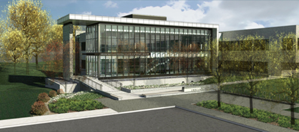
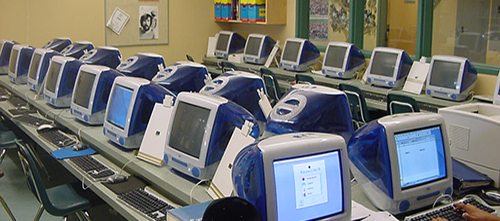

South Harmon
Our Beleifs
South Harmon is an institution built around the needs of the students. We believe that the best education that we can provide you is the knowledge provided by your peers. At South Harmon, the students are the teachers and the teachers are the students.
We believe that not only does this provide you with the highest quality of education but also promotes a leadership position in all of our students. Our graduates enter the business world with the ability to both lead and follow.
Mission Statement
University bilaws are built around an unequivacle devotion to student education. As your institution, we promise to prepare you to be leaders in your industry. South Harmon Institute of Technology Alumni are some of the most well prepared and highest paid members of society. We look to continue our success and provide everything we can for our students and faculty.
Why South Harmon
Complete and undeniable devotion. At South Harmon, our faculty are here for you, because they are you. And you are the faculty. Because of this, students work together to overcome issues and ensure that each person at the school can find success.
This also helps students to learn how to solve their own problems rather than be dependent on others to fix their problems.
We're Different
Karaoke 150, History of Beer 225, Theoretical Physical Education 300. These are just a few examples of the wide variety of courses provided at South Harmon. These kinds of courses provide students with a relaxed environment where they can practice leadership skills teaching a subject that they are very familiar with.
At the same time, others are able to learn about a more obscure topic that they might not have had a whole lot of knowledge of prior.
IT


IT Department
One of the biggest parts of our school is our firm dediation to Technology. We update our computers on a regular basis. Our graduates from our Information Technology program are often seen in some of the most well known companies throughout the world. We have alumni who have worked at Enron, Bear Stearns, Goldman Sachs. If its been in the news, we're there!